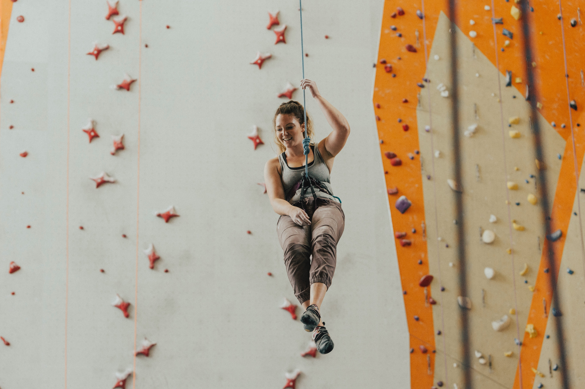
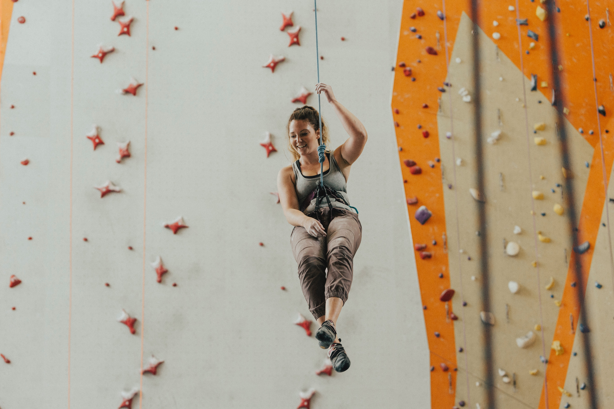

Indoor climbing
The most enjoyable and efficient sport

 



As an exercise, you really can’t do better than climbing. Indoor
climbing will improve all aspects of your physical condition. You will
see improvement in your balance, flexibility, and agility and develop
both upper and lower body strength. Best of all, you will burn calories
at a higher rate than most strenuous workouts and will do it before you
know it.
Climbing gyms give you an enjoyable venue for social interaction with
like-minded people. It's a place for trust building, camaraderie, and
self confidence.
This is a fun sport for everyone, from novice, sport, competitive, to
professional climbers it's an amazing activity or even lifestyle.